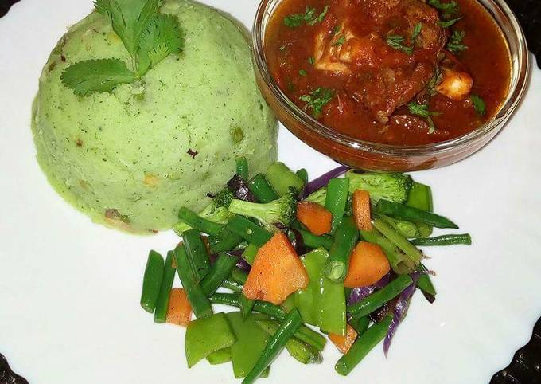

Mukimo

Mukimo
Mukimo, mokimo or irio is a Kenyan meal (predominantly from communities living around Mount Kenya) prepared by mashing potatoes and green vegetables. It may also include maize and beans.
The dish may be served with beef stew and some vegetables on the side
Ingredients
- 1kg Irish potatoes(select fresh for better taste)
- 2 handfuls of pumpkin leaves(soft and fresh)
- 3 cups of soft maize off the cob
- A bunch of finely chopped spring onions
- Cooking oil
- Salt to taste
Steps
- Carefully peel the potatoes and slice them into halves, wash them clean and set them in a pot
- Prepare the pumpkin leaves by removing the stalk, clean them and shred them into sizeable pieces. They can also be blended for richer colour.
- Add the leaves together with the maize into the pot with the potatoes. Add enough water for everything to cook well.
- Place the pot over medium heat for 30 minutes. Add a pinch of salt and let it all cook for 10 more minutes.
- Reduce the heat and mash all the ingredients until it's all well blended. Remove from the heat and set aside.
- In another pot, add the spring onions and cooking oil. Let the onions cook till golden brown. Adjust the heat to minimal and add in the mashed mixture. Mix well.
- Get it off the heat and serve hot
Serve it with beef stew or chicken stew and some vegetables on the side